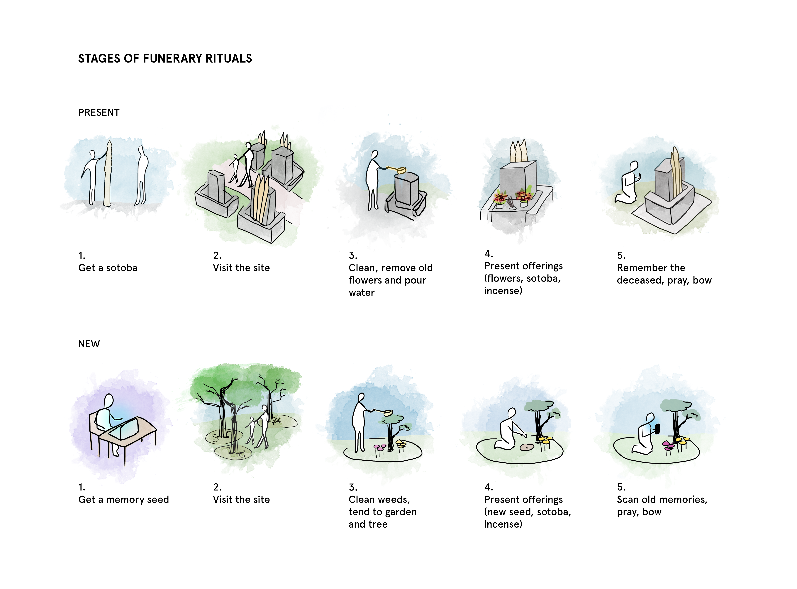

I was very lucky and grateful to be selected with 4 others students across programs at the Harvard Graduate School of Design to participate in its annual Tokyo Summer Workshop with Professor Sergio Lopez-Pineiro during August of 2018. For one week, we worked in tandem in groups with students from architecture programs around the area to propose an intervention based on a set of conditions we observed within a site along with the workshop’s theme (Mirrors and Bubbles: Matches/Mismatches between urban spaces and digital technologies).
Space now occupies both physical and digital realms. In "On Exactidude in Science," Jorge Luis Borges imagines an empire where cartography is so vaunted, that its map is at the same scale as the empire itself. Lewis Carrol similarly explores this in "Sylvie and Bruno Concluded."
"What a useful thing a pocket-map is!" I remarked.
"That's another thing we've learned from your Nation," said Mein Herr, "map-making. But we've carried it much further than you. What do you consider the largest map that would be really useful?"
"About six inches to the mile."
"Only six inches!" exclaimed Mein Herr. "We very soon got to six yards to the mile. Then we tried a hundred yards to the mile. And then came the grandest idea of all ! We actually made a map of the country, on the scale of a mile to the mile!"
"Have you used it much?" I enquired.
"It has never been spread out, yet," said Mein Herr: "the farmers objected: they said it would cover the whole country, and shut out the sunlight ! So we now use the country itself, as its own map, and I assure you it does nearly as well."
from Lewis Carroll, Sylvie and Bruno Concluded, Chapter XI, London, 1895
Today, we pursue mapping in our daily lives with apps - from Google Maps, to Waze, from Airbnb to Uber, Yelp to DoorDash, Strava to Pokemon Go, our apps are layered with dense social information on how we inhabit our spaces, and how we move between them. Despite these digital magnified mirrors with an extremely rich resolution of information, there are still gaps between the digital and physical realms. With Waze and Google Maps routing, these apps fundamentally are agents of behavior change and also inform how spaces will be used, creating a feedback loop. They also are fallible (as evidenced by this article on Apple Maps’ process) and do not always reflect the essence of the physical place (perhaps that is not even their goal).
The theoretical and design provocation is heavily shaped by this dual duel. Apps often need to match the spaces they represent and offer efficiencies. But in their ambitions to make cities more transparent, they also eliminate secret or hidden spaces and transform space into commodity. They also provide access - but access for who? Those with apps, those who do not need special routes (ie. accessible routes), those who seek efficiency rather than disconnect and tranquility.
Kuma: Sometimes I wonder whether it is really fortunate that phone calls can get through to anywhere. We have all have encountered the excuse that “I must have been out of range.” I feel that there is something very important there. Up to now, both architecture and the keitai have developed in the direction of the modernist concept of transparent space, picking up speed as they go. But once it actually becomes possible for radio waves to reach every point in the world, people may find that its not as all what they want.
Kengo Kuma (Architect, Kengo Kuma and Associates) in conversation with Kiyohito Nagata
(Vice President, NTT DoCoMo). From the competition brief for “Keitai City” organized by a+u and NTT DoCoMo (2005).
The objective of this workshop was to conceive and imagine urban environments (for example, a piece of infrastructure, a streetscape, a plaza, a garden, a pavilion, or a building) that reconfigured the city in ways that either amplified or resisted the technological reality portrayed by mobile devices. We were asked to imagine two urban spaces:
Our site was the area of Yanesen (Yanaka, Nezu and Sendagi) in Tokyo. In this uniquely contemporary condition of mismatches, Yanesen has uniquely survived both the Grate Kanto Earthquake of 1923, the bombings of WWII and even still preserves traditions from the Edo period, embedded in its urban fabric and public spaces. In parallel with this strong historical current, Yanesen also offers spaces of modernity, technological innovation and touristic sites that have entered the digital world with services like Instagram and Yelp, opening its hidden spaces to non-locals.
What's even more striking about Yanesen is the cemetary near its center -- Yanaka Cemetary is one of the largest (and few) green spaces in Yanesen, a spirtitual and cultural center of the region. It's the center of the Cherry Blossom festival in Yanesen, where tree lines flank its main pathway. Nestled between family plots are the sacred plots of the Tokugawa shogunate, and childrens' playgrounds. With green space so hard to come by, this cemetary performs the functions of funerary ritual space while also supporting family recreation and tourism. The sharp contrasts between these multiple uses and gradual spatial density are evident in the park plan.

Playgrounds are nestled next to dense cemetary plots. Because Tokyo has densified, green space is multi-functional and precious.

There are many typologies of cemetary plots, and structures. Traditional buddhist gorintōs can occur in many different materials, scales, and forms.


Sotobas, shown here, rest behind a gorintō.
The space at Yanaka Cemetary is finite. Auctions for any plots remaining are competitive, and over time, Yanaka has adapted by shrinking plots, and building vertically instead. Pictured here is a structure for urn storage -- while this columbarium has helped families who aren't in a position to bid for traditional plots gain space in the cemetary, it hasn't been able to support rituals that require more traditional physical plots. We were lucky to conduct our site analysis and observation during Obon, a Japanese Buddhist custom in which families honor the spirits of their ancestors and fallen loved ones.

A columbarium, shown above, densely accommodates many more urns than traditional plots can.
The compression of gravesites into denser vertical spaces has also presented in Japan as futuristic spiritual spaces like these, with interactive light displays. These sites are indoors, tiled with images of Buddha. While they're certaintly immersive, they're a strong departure from traditional cultural Buddhist practice in this region of Japan, with fractured reception across generational lines. In alternatives like this we saw chances for families without existing plots in cemetaries gain a chance to honor the deceased formally. The digital facade and immersion though prompted us to also ask how we can honor the memories of loved ones in these spiritual spaces in a more sensory way. We regularly interact with images, videos and audio, and cherish memories by revisiting them. In the digital age, what does it mean to honor someone using the media we natively record memories with? What role should the digital play in our physical interventions on funerary traditions?
At traditional grave sites, family members clean and purify the site, present incense, cherish shared memories and stories, and present a sotoba. Sotobas function as offerings for the deceased, a way to mark that someone visited with inscriptions of the person it is offered to -- over time, they've evolved into inscribed wooden strips that are placed behind a headstone or stupa. Vertical plots require families to creatively interpret these traditions, and find new ways to practice the same intentions. It's worth noting that cremation is largely the norm in Japan, and is nearly mandatory. The use of urns is common, though recently the practice of scattering ashes in nature has gained acceptance.
In short, we explored interventions that bridge the gap between the ways people are honored traditionally, and in compressed spaces. We asked what it means to incorporate the digital layer of a persons' identity into a physical intervention that also addressed the practical challenges of density, and the need to preserve green space in an increasingly finite geographic area. We propose methods of cremation in which ashes can be scattered to enrich soil and support new plants. These plants in turn can be cared for by family members, pruned, watered and maintained during Obon. Sites can be marked with scannable tags that host private or public images, videos, recordings and obituary entries to cherish memories -- but on one condition: these digital spaces can only be accessed when a person is geographically close enough to the tag, creating a strong level of intimacy between the digital space and the physical. Intended to still require visitors to actually be near the space to fully experience it, this digital/physical mirror reinforces the importance of Obon and visiting the site in person. Visitors can also create digital sotobas, and upload new memories when at the site for other visitors to see, if shared publicly. There's quite a bit more here, but if you're interested in learning more about our interventions, I'd love to chat anytime! Our presentations are also included below for additional context. Within 1 week, we visited Yanesen, identified a cultural and digital point of intervention, interviewed and observed the site, proposed interventions, and created a digital demo of the technology component as well. What a week!
We started by modeling the current plan of Yanaka Cemetary, and some of the surrounding area. Overlayed on this plan is our proposed intervention - using circle packing, we're able to create a density gradient between different sizes plots for our new plot typologies that can gradually fill in to create a garden.

These three images depict the new natural plots we're proposing - because they're mostly plant-based, they're density is largely determined by the space roots will claim underground to allow for healthy plant growth. We focused on natural elements that were core parts of Obon, and existing gorintōs we observed on site.

Type 1: Drawing from existing traditions of bringing plants and integrating greenspace into plots, we invert the model and embed plots directly into greenspace.

Type 2: Water is an important element of Obon rituals and the upkeep of hallowed grave sites. Not only does it extend naturally into the green proposal we've constructed, but it reimagines the rigid structure of marble gorintos as a softer and more organic feature.

Type 3: A rock garden plays on the marble and stone construction of many gorintos we observed at Yanaka Cemetary. Rock gardens are rooted in Japanese culture, and may endure more adverse weather conditions better than our other proposals.
Here, we draw three stages to mark the transition from the existing typology on underdeveloped greenspace in Yanaka to gradually move towards our new proposals.

Stage 0: The current state of the more underdeveloped sections of Yanaka
Stage 1: The introduction of circular natural plots
Stage 2: A gradual transition towards natural plots
It's of course worth noting the obvious -- this is a radical proposal. A transition like this would require existing plots to convert to these new archetypes, a project that could transform the way families currently care for their loved ones and the way they have maintained their plots for decades (sometimes, centuries).
Check out our final presentation to learn more.